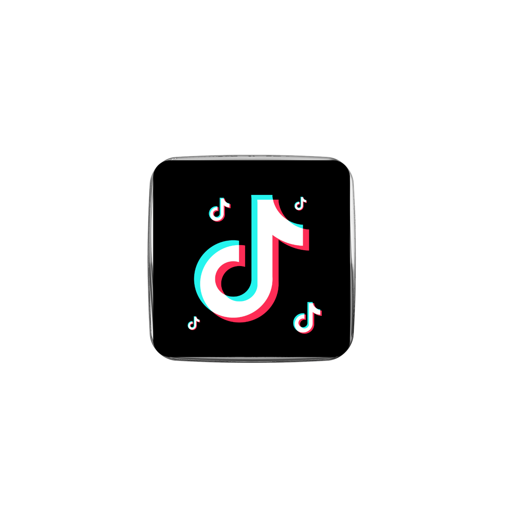
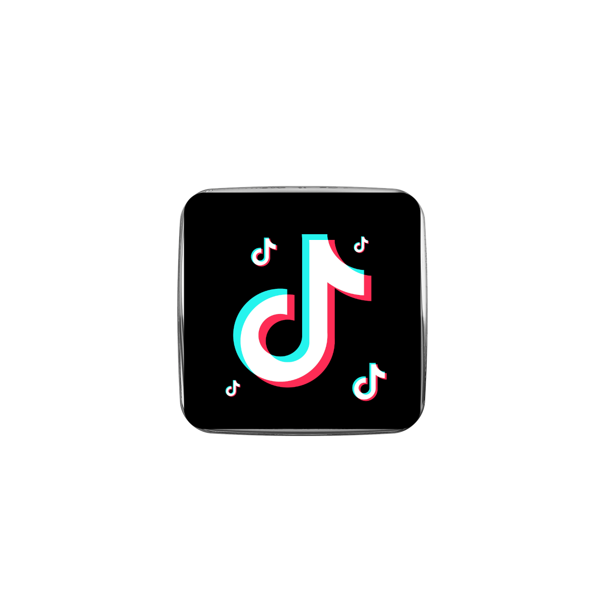

Currículo
Nome: Bruno dos Santos Melo;
Idade: 27;
Escolaridade: Ensino Médio Completo;
Estado Civil: Solteiro;
Eu nasci em uma cidade do interior do estado do Piauí a 27 quilômetros da capital Teresina.
Tenho formação técnica pelo Instituto Federal do Piauí, campus Teresina zona sul, em técnico de estradas.
Com o curso concluído, estou pronto para o mercado de trabalho.
Estou sempre inovando meus conhecimentos e me atualizando com as tecnologias que surgem no mercado.
Saber utilizar as tecnologias que estão em alta, como as Inteligências Artificiais, é essencial para ter espaço na concorrência por um novo emprego, e por isso não deixei de me atualizar quanto a elas.
Acesse o meu perfil do GitHub
Técnico em Estradas;
- Topografia;
- Informática aplicada a estradas;
- AutoCAD;
- Ensaios de Solos;
- Hidrologia;
- Matemática Financeira;
- Máquinas pesadas;
Conhecimentos Gerais;
- Linguagem HTML e CSS;
- Linguagem JavaScript e Python;
- Reboot para Windows (Pen drive);
- Hospedagem gratuita e paga;
- Campanhas no Facebook Ads;
- Venda com criativo na fase de validação;
- Métricas das campanhas de anúncios;
- Excel básico;
- Edição de vídeo no CapCut e DaVinci Resolve;
- Edição de imagem com o Gimp + Canva;
- Noções de imagem vetorial com Inkscape;
- Noções de post redes sociais com YouTube, TikTok e Instagram/Facebook;
- Linguagem fácil para ChatGPT e outras IAs;
- Velocidade na digitação;
Referências para conhecimentos gerais: redes sociais, Gustavo Guanabara, BroCode;
Minhas redes sociais:
Outras informações estarão no meu currículo impresso, antes de navegar pelas minhas redes sociais, saiba que são "contas novas", indico você começar acessando o meu Linkedin primeiro, depois meu perfil do Tiktok pois lá eu tenho vídeos de dica de desenvolvimento de site e programação, no momento em que escrevo isso estou com 2 vídeos apenas, no Instagram eu tenho só um post carrosel sobre a dica de desenvolvimento o web no Tiktok;
Não fique confuso quanto ao meu apelido, Bonru San vem de Bruno Santos, separei o "B" e troquei as 4 letras em comjunto, de "runo" para "onru" e "San" retirei a última sílaba do sobrenome "Santos", um apelido para as pessoas que me conhecerem na internet, isso é uma forma de reservar a privacidade uma vez que a internet é uma terra sem lei e também me ajuda a saber quem me conhece pela internet e quem me conhece na vida real.
Eu pretendo me tornar um influenciador na internet um dia.
Veja o meu projeto feito em parceria com o ChatGPT e DeepSeek, a senha é "123" e a palavra chave é "MachaNoProgresso2025" basta clicar no pequeno topógrafo abaixo:

Atenção!
O projeto está hospedado gratuitamente no Render por isso pode ser que não abra de primeira ou talvez precise de duas ou três tentativas e aguarde o site entrar no ar, coisa de 1 minuto ou 1 minuto e meio não mais que isso, ele vai carregar um pouquinho e aí vai pedir a palavra chave e a senha, é o projeto mais complexo que eu já fiz com inteligência artificial, não pelo design até por que o design está dramático, é pela inteligência topográfica e pela interatividade dinâmica.
 

.png)